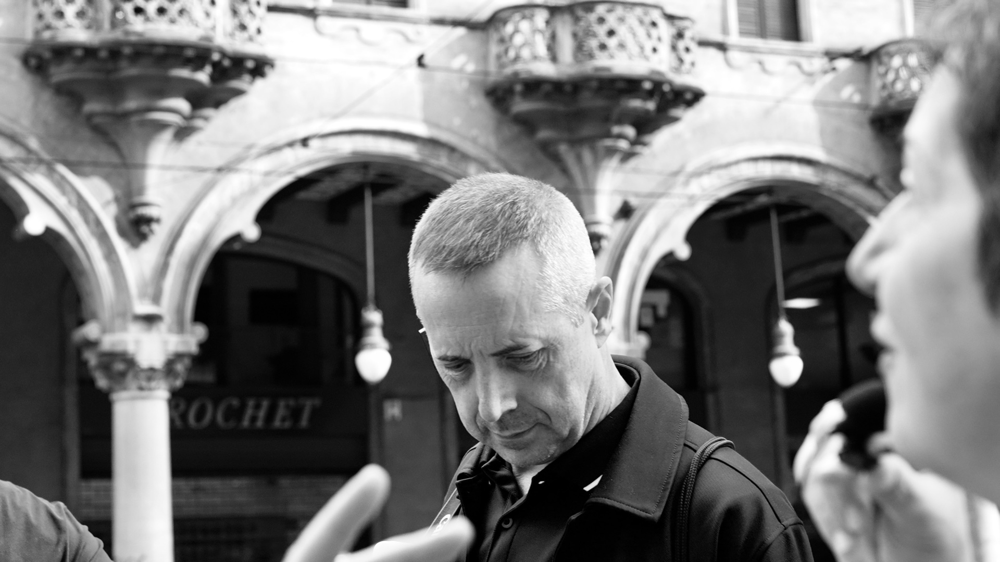

Михаил Минаков
Prof. Mikhail Minakov • Философ, теоретик модерна«Высшая форма политического суверенитета сегодня — это бережность к времени собственной жизни: способность выйти из навязанного ритма институтов и вернуть себе глубину созерцания.»
Ведущий исследователь европейского модерна, политической темпоральности и феноменологии власти. Основатель интеллектуальных программ Otium Academy. В рамках Туринского семинара разработал трехмерную модель политического пространства, объединяющую институциональные оси, идеологические нарративы и хронополитический контроль, а также провел философскую деконструкцию Савойского мифа и биополитики Чезаре Ломброзо.